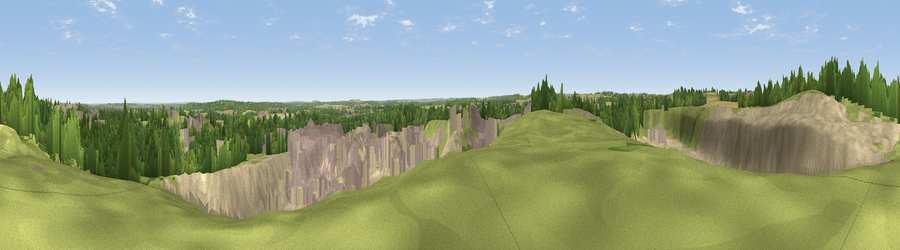

Viewpoint near Whitwell
#30162 in England · top 43% of its area beats it · near Whitwell · footpathWhere it is
The exact computed spot (SK 52925 75675). Click the marker for map links.
Public access: a public right of way passes within 11 m of this spot. Computed from Natural England's CRoW access layer and OpenStreetMap rights of way — not the legal definitive map. Always verify locally.
The view, rendered

A 360° render of this exact spot computed from the terrain model, tree cover and land cover — summer colours, afternoon light, calibrated against photographs of famous viewpoints. Real trees, hedges and buildings will differ in detail.
The panorama
Grey silhouette: terrain skyline in each direction (720 bearings, Earth curvature and refraction included). Dashed green: skyline with trees (+15 m) and buildings (+8 m) as obstacles. Blue strip: how far the ground is visible on each bearing.
Where the view opens
Wedge length = distance to the farthest visible ground on that bearing (vegetation-aware). Rings at 10, 25 and 50 km.
What fills the view
34% bare ground · 23% grassland · 18% built-up · 16% woodland · 5% cropland · 4% water
Angular shares of the visible panorama (visual magnitude), not map area. Landscape diversity 0.69 (0–1 Shannon).
Key numbers
More beautiful places nearby
The staircase of upgrades: each row has a higher view potential than everything closer. Driving times are estimates from straight-line distance, calibrated against real road routing — check an actual route before setting out.
| Place | Direction | Drive | Score |
|---|---|---|---|
| Viewpoint near Worksop | E · 4 km | ~10 min | 42.9 |
| Bull Hill | NNW · 6 km | ~13 min | 43.6 |
| Viewpoint near Meden Vale | SE · 7 km | ~15 min | 65.2 |
| Burstheart Hill [Thoresby Colliery] | SE · 13 km | ~24 min | 69.3 |
| Viewpoint near Maltby | N · 17 km | ~29 min | 70.7 |
| Crich Stand | SW · 27 km | ~44 min | 73.0 |
| Viewpoint near Wharncliffe Side | NW · 30 km | ~47 min | 75.2 |
| Tissington Hill | WSW · 44 km | ~64 min | 75.5 |
53.27543, -1.20779 · source: screening · position refined by local search. Computed location — check access rights before visiting.